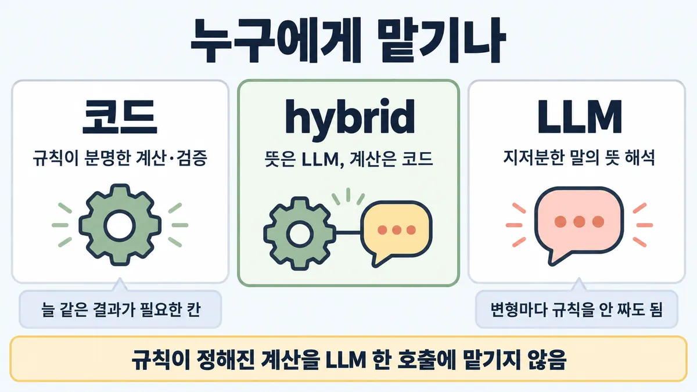
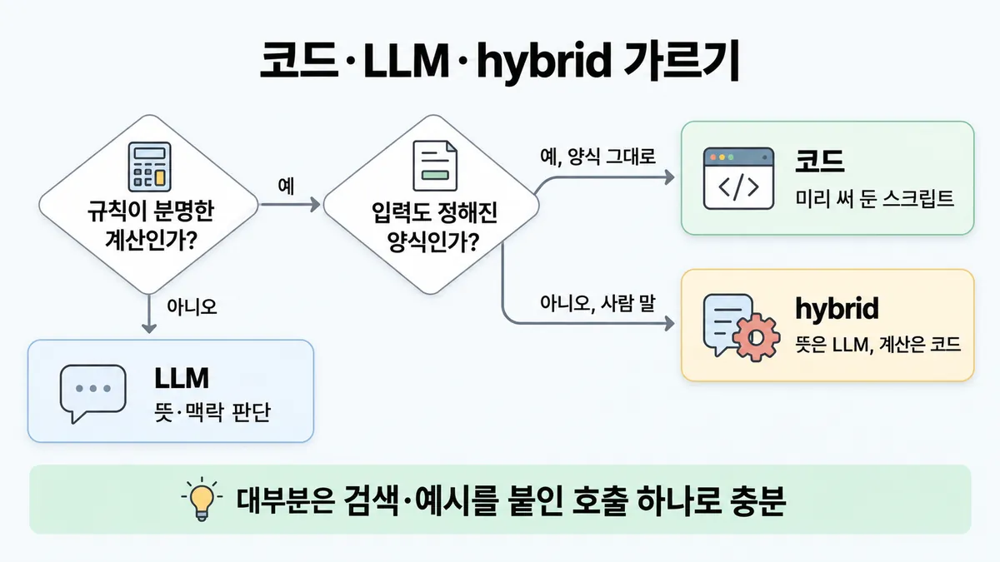
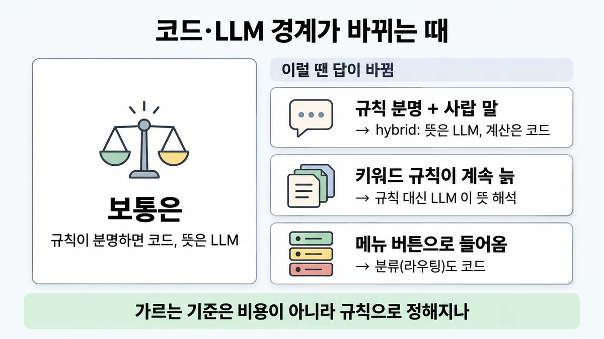

◆ 코드 vs LLM vs hybrid
표시가 없는 문장은 공식 문서에서 확인한 내용이에요. 다른 표시는 읽는 법
왜 배우나 — 시험이 요구하는 것
시험 목표 1.1 업무 문제를 Claude 해법으로 · D1 설계 17%Translate business problems into Claude-based AI solutions
이 개념으로 푸는 판단 (할 수 있어야 하는 것)
- 1.1① 이 일, LLM 이 꼭 있어야 하나? — 코드 / LLM / 둘을 섞기(하이브리드) 중 어디에 맡기나
- 6.1① "완벽한 계약 검토기를 만들어 달라" — 아키텍트의 첫 행동은? — 해법(모델·프롬프트·에이전트)보다 디스커버리 먼저
한눈에


ELI5
계산기와 친구에게 일을 나눠 맡기는 거예요.
- 덧셈은 계산기가 늘 똑같이, 틀리지 않게 해요.
- "이 편지 화난 거야?" 는 계산기가 못 하고 친구가 알아들어요.
- 둘이 섞인 일은 친구가 읽고, 숫자는 계산기에 넘겨요.
- 계산기로 되는 일에 친구를 부르면 가끔 답이 달라져요.
개념 설명
원리
코드가 맡는 일
- 규칙이 분명한 계산·검증·정해진 순서. 같은 입력이면 늘 같은 결과(결정론).
- 공식 근거 두 곳 : Skills 모범 사례 "결정론적 작업은 스크립트" · "생성 코드보다 믿을 만함"(미리 써 둔 스크립트가 모델이 즉석에서 생성한 코드보다), programmatic tool calling 글 "반복·조건·변환·오류 처리를 LLM 추론(reasoning) 속이 아니라 코드에 드러나게".
- LLM 은 같은 입력에도 답이 달라질 수 있음(비결정). 환불 금액처럼 틀리면 안 되고 규칙이 정해진 값을 LLM 이 만들면, 맞을 때도 "왜 맞았나"를 보장 못 함.
LLM 이 맡는 일
- 지저분한 말의 뜻 해석. 규칙으로 하려면 사용자 발화의 변형마다 규칙을 짜야 함 → 공식이 "Claude 를 고를 이유"로 드는 지점.
- 공식 고객지원 신호 : 비슷한 문의 대량 반복 · 여러 자료를 빨리 합쳐야 함 · 24시간 응대 · 성수기 급증 · 일관된 말투.
hybrid
- 뜻은 LLM, 계산·동작은 코드. 고객지원 에이전트 글도 "환불·티켓 갱신 같은 동작은 코드로(programmatically) 처리"라고 적음.
- LLM 이 뽑은 값을 코드에 넘길 때는 스키마로 받음 → ■ input → processing → output → feedback loop · 규칙 ③.
복잡도 사다리
- 가장 단순한 해법부터. 에이전트를 아예 안 만드는 것도 답.
- 대부분은 검색(retrieval)·예시를 붙인 LLM 호출 하나로 충분 → 부족하면 워크플로 → 에이전트(1.3).
- 복잡도는 "결과가 나아진 게 보일 때만" 늘림.
핵심 질문 두 개
- 이 칸의 답은 규칙으로 정해지나, 뜻을 읽어야 나오나?
- 이 칸이 틀리면 누가 책임지고, 같은 입력에 같은 답이 필요한가?
규칙과 판단


갈림길
누구에게 맡기나 [1.1①]
코드
결정론적 작업은 미리 써 둔 스크립트가 모델이 즉석에서 생성한 코드보다 믿을 만함 (Skills 문맥 — 시스템 전체로 넓힌 건 이 카드의 해석) · 반복·조건·데이터 변환·오류 처리는 코드에 드러나게
hybrid
뜻은 LLM, 계산은 코드
LLM
말이 바뀔 때마다 규칙을 새로 짜지 않아도 됨
LLM 을 쓸 만한가 [1.1①]
쓸 만함
성수기 급증 · 일관된 말투도 같은 신호
코드로 먼저
LLM 을 붙일 이득이 적음 업계 일반
얼마나 복잡하게 [1.1①] [1.3]
단일 호출
대부분은 검색(retrieval)·예시를 붙인 LLM 호출 하나로 충분
부족할 때만 워크플로 → 에이전트
→ ■ 가장 작은 맞는 형태 (1.3 본편)
흐름
그림 속 이름·금액·시간·토큰 수는 예시예요. 공식 한도·동작은 카드 본문 값이 기준.
장면 글로 보기
칸 : 고객 → Claude → 환불 계산 코드 → 고객이 받는 답
규칙 (환불 계산 코드) : 환불 = 단가 × 수량 − 반품 배송비 3,000원
질문 : 누가 금액을 계산해야 할까?
① hybrid ✓
- 시작 : 고객 — 말 : “지난달 산 셔츠 두 장 중 한 장 반품하면 얼마 돌려받아요?”
- 뜻 : 고객 → Claude : 사람 말에서 뜻만 뽑음 — 쪽지 : { 상품: "셔츠", 단가: 29000, 반품: 1 }
- 계산 : Claude → 환불 계산 코드 : 규칙대로 계산 — 쪽지 : 29,000 × 1 / − 3,000 배송비 / = 26,000
- 답 : 환불 계산 코드 → 고객이 받는 답 — 말 : “26,000원 환불돼요.”
- 끝 : 뜻은 Claude, 계산은 코드 — 같은 질문엔 늘 26,000원
② 계산까지 LLM ≠
- 시작 : 고객 — 말 : “지난달 산 셔츠 두 장 중 한 장 반품하면 얼마 돌려받아요?”
- 한 호출 : 고객 → Claude : 계산까지 한 번에 — 배송비 규칙은 안 봄 — 쪽지 : "셔츠 한 장 29,000원이니 29,000원 돌려주면 되겠다"
- 건너뜀 : 환불 계산 코드
- 답 : Claude → 고객이 받는 답 : 규칙대로면 26,000원 — 말 : “29,000원 돌려드려요.”
- 끝 : 규칙이 정해진 계산을 비결정적인 쪽에 맡김 — 다음번엔 맞을 수도, 또 틀릴 수도
반복
같은 질문 5번 보내 보기
- ① hybrid — 5번 모두 26,000 ✓
- ② 계산까지 LLM — 5번 중 3번만 맞음 ≠
가정② 는 그림용 가정 — 반품 배송비 규칙을 가끔 빠뜨린다고 봄. 실제 측정값 아님
규칙 원문 갈림 기준 (갈림길로 그린 규칙)
갈림 기준
규칙이 분명한가, 입력이 지저분한 말인가
- 규칙이 분명한 계산·검증은 코드. 결정론적 작업은 미리 써 둔 스크립트가 모델이 즉석에서 생성한 코드보다 믿을 만함 (Agent Skills 모범 사례 — Skills 문맥)
- 반복·조건·데이터 변환·오류 처리는 코드에 드러나게, LLM 추론(reasoning) 속에 숨기지 않음 (programmatic tool calling 글)
- 지저분한 말의 뜻 해석만 LLM. 사용자 발화의 변형마다 규칙을 짜지 않아도 됨
- 둘이 섞인 일 = hybrid : 뜻은 LLM, 계산은 코드. 환불·티켓 갱신 같은 동작도 코드(도구)로 처리
- LLM 은 같은 입력에도 답이 달라질 수 있음 → 늘 같은 결과가 필요한 칸은 코드
- Claude 가 맞는 신호 = 비슷한 문의 대량 반복 · 여러 자료를 빨리 합쳐야 함 · 24시간 응대 · 성수기 급증 · 일관된 말투
- 드물고 규칙이 정해진 일 → 코드로 먼저 업계 일반
- 분류(라우팅)도 정확하게만 되면 LLM 이 아니어도 됨 — 전통 분류 모델·알고리즘도 공식 선택지
복잡도 : 가장 단순한 해법부터, 필요할 때만 늘림. 에이전트를 아예 안 만드는 것도 답
- 대부분은 검색·예시를 붙인 LLM 호출 하나로 충분 → 부족할 때만 워크플로 → 에이전트 (1.3 본편)
- 프레임워크는 추상화가 프롬프트·응답을 가려 디버깅이 어려움 → 먼저 API 직접
더 깊이 : 판단 규칙 · 상황 변수 (설명)
판단 규칙
| 조건 | 답 | 등급 | 근거 |
|---|---|---|---|
| 규칙이 분명한 계산·검증, 입력도 정해진 양식 | 코드 | (Skills 문맥) | agent-skills best-practices "Prefer scripts for deterministic operations" · "More reliable than generated code" |
| 반복·조건·데이터 변환이 섞인 오케스트레이션 | 코드에 드러나게 | advanced-tool-use "Loops, conditionals, data transformations, and error handling are all explicit in code rather than implicit in Claude's reasoning." | |
| 자연어 뜻 해석, 변형이 많음 | LLM | customer-support-chat "without … requiring extensive programming of permutations of user utterances" | |
| 뜻 해석 + 규칙 계산이 한 일에 섞임 | hybrid (뜻 = LLM, 계산·동작 = 코드) | building-effective-agents "Actions such as issuing refunds or updating tickets can be handled programmatically" | |
| 비슷한 문의가 대량 반복 · 24시간 · 급증 | LLM 을 쓸 만함 | customer-support-chat | |
| 호출 하나(검색·예시 포함)로 됨 | 거기서 멈춤 | building-effective-agents "optimizing single LLM calls with retrieval and in-context examples is usually enough" | |
| 분류(라우팅)가 규칙·전통 모델로 정확히 됨 | LLM 이 아니어도 됨 | building-effective-agents "either by an LLM or a more traditional classification model/algorithm" | |
| 프레임워크부터 깔자 | 먼저 API 직접 | building-effective-agents |
상황 변수
| 변수 | 값 | 답 쪽 | 등급 | 근거 |
|---|---|---|---|---|
| 규칙의 분명함 | 표·식으로 적힘 | 코드 | 판단 규칙 1 | |
| 규칙의 분명함 | 사람마다 판단이 다름 | LLM | 업계 일반 | — |
| 입력 모양 | 폼·코드값 | 코드 | 업계 일반 | — |
| 입력 모양 | 자유 문장(메일·채팅) | LLM 이 뜻을 뽑고 코드가 처리 | 판단 규칙 3·4 | |
| 틀렸을 때 비용 | 돈·법적 값(환불액·세금) | 계산은 코드 | 업계 일반 (결정론 근거는 확인) | 판단 규칙 1 |
| 양 | 드물고 정해진 일 | 코드로 먼저 | 업계 일반 | — |
| 양 | 비슷한 문의 대량 반복 | LLM 을 쓸 만함 | 판단 규칙 5 | |
| 한 호출로 되나 | 됨 | 단일 호출 | 판단 규칙 6 | |
| 한 호출로 되나 | 단계가 정해져 있음 / 못 정함 | 워크플로 / 에이전트 | building-effective-agents (1.3 본편) |
연습 문제
쇼핑몰 고객이 채팅으로 "지난달 산 셔츠 두 장 중 한 장 반품하면 얼마 돌려받아요?" 라고 묻는다사람 말. 환불액은 회사가 정해 둔 반품 규칙으로 계산한다규칙이 분명. Claude 에게 무엇을 맡길까?
시험 대비
함정
- "환불 금액 계산 + 문의 뜻 분류"를 한 번에 → 환불 금액 계산까지 LLM 한 호출에 맡김 = 규칙이 분명한 일을 비결정적인 쪽에 맡김. 계산은 코드
- "첫날부터 멀티에이전트 프레임워크" → 가장 단순한 해법부터 · 먼저 API 직접 → ◆ 단일 vs 멀티 에이전트
- "AI 를 넣어야 발전" → 사용자는 멋진 에이전트가 아니라 늘 되는 제품을 원함 (Skilljar)
- 반대 함정 : "LLM 은 비결정적이니 자연어 문의도 키워드·정규식 규칙으로" → 변형마다 규칙을 짜야 함. 뜻 해석은 LLM 몫
- "라우팅은 반드시 LLM 분류" → 정확하면 전통 분류 모델도 됨
신호
"we recommend finding the simplest solution possible, and only increasing complexity when needed. This might mean not building agentic systems at all."
"For many applications, however, optimizing single LLM calls with retrieval and in-context examples is usually enough."
"Prefer scripts for deterministic operations" (Agent Skills 모범 사례)
"Loops, conditionals, data transformations, and error handling are all explicit in code rather than implicit in Claude's reasoning."
"High volume of repetitive queries" · "Claude excels at handling a large number of similar questions efficiently, freeing up human agents for more complex issues."
"without generating canned responses or requiring extensive programming of permutations of user utterances"
"Users probably don't care that you've built a fancy agent - they want a product that works consistently." (Skilljar)


더 깊이 : 뒤집히는 때 · 오답 재료 (설명)
뒤집히는 때
1. 규칙이 분명한데 LLM 이 필요한 때
- 조건 : 환불 규정은 표로 정해져 있지만, 고객은 "지난달 산 두 개 중 하나만 반품하면 얼마 돌려받아요?"처럼 씀.
- 판단 : 규칙이 분명하다고 코드만으로는 안 됨 — 어느 주문·몇 개·무슨 사유인지 뜻을 읽어야 계산 입력이 생김. LLM 이 값을 스키마로 뽑고 → 코드가 계산 = hybrid.
- 등급 : (각 부품) · 조합은 업계 일반
- 근거 : customer-support-chat · structured-outputs · agent-skills best-practices
2. 키워드 규칙이 먼저 무너지는 때
- 조건 : 문의 유형 분류를 키워드 규칙 300개로 해 왔는데, 새 상품이 나올 때마다 규칙이 늘고 오분류가 쌓임.
- 판단 : 변형이 끝없는 입력은 규칙 유지비가 LLM 을 넘음 → 뜻 해석은 LLM 으로.
- 등급 : (공식이 "변형마다 프로그래밍 없이"를 Claude 선택 이유로 듦)
- 근거 : customer-support-chat
3. "LLM 은 비싸니까 코드" 가 이유가 안 되는 때
- 조건 : 문의 분류만 LLM 에 맡김. 월 9만 건, 건당 입력 600토큰(시스템 프롬프트 포함) · 출력 30토큰, Haiku 4.5.
- 계산 : Haiku 4.5 = 입력 $1 · 출력 $5 (백만 토큰당). 건당 600 × $1/1M + 30 × $5/1M = $0.00075 → 월 9만 × $0.00075 = $67.5.
- 판단 : 분류 호출 비용은 작음. 코드냐 LLM 이냐는 비용보다 "규칙으로 정해지나 · 늘 같은 답이 필요한가"로 가름.
- 전제 : 캐싱 안 함 · 재시도 없음 · 가격 = 2026-09-28 조회값.
- 등급 : 계산
- 근거 : prompt-caching 표(Haiku 4.5 가격)
4. 분류도 LLM 이 아니어도 되는 때
- 조건 : 문의가 앱의 메뉴 버튼(배송 · 환불 · 계정)으로 들어옴.
- 판단 : 입력이 이미 코드값 → 라우팅은 코드. 공식도 분류는 "LLM 이든 전통 분류 모델·알고리즘이든 정확하면" 된다고 함.
- 근거 : building-effective-agents
오답 재료
| 오답 | 왜 끌리나 | 왜 틀리나 | 등급 | 근거 |
|---|---|---|---|---|
| "환불 금액 계산까지 LLM 한 호출에 맡긴다" | 호출 하나라 단순해 보임 | 규칙이 분명한 값을 비결정적인 쪽에 맡김. 계산은 코드 | agent-skills best-practices · writing-tools-for-agents | |
| "첫날부터 멀티에이전트 프레임워크" | 규모 있어 보임 | 가장 단순한 해법부터 · 먼저 API 직접 | building-effective-agents | |
| "AI 를 넣어야 발전" | 새 도구 = 진보라는 습관 | 에이전트를 아예 안 만드는 것도 답. 사용자는 늘 되는 제품을 원함 | building-effective-agents · Skilljar 287794 | |
| "LLM 은 비결정적이니 자연어도 키워드 규칙으로" (반대 함정) | 결정론이 안전해 보임 | 변형마다 규칙을 짜야 함 | customer-support-chat | |
| "라우팅은 반드시 LLM" | LLM 시스템이니까 | 정확하면 전통 분류 모델도 공식 선택지 | building-effective-agents | |
| "비용 줄이려 LLM 을 전부 규칙으로" | LLM 비용이 커 보임 | 분류 같은 짧은 호출은 비용이 작음. 기준은 규칙성·결정성 | 계산 | 뒤집히는 때 3 |
참고
개념
출처
- 가이드 목표 1.1 공식 시험 가이드 v1.0
- building-effective-agents
- customer-support-chat
- agent-skills best-practices
- advanced-tool-use
- writing-tools-for-agents
- Skilljar API 287794
상태
- 업계 일반 1줄(드문 일 → 코드)
- '코드 먼저'의 공식 문장은 Skills·도구 호출 문맥 — 시스템 전체로 넓힌 건 이 카드의 해석
미해결
- 목록 1.1① 의 "'LLM 대신 코드'라는 직접 문장은 공식 문서에서 못 찾음" — 이번에도 시스템 설계 차원의 직접 문장은 못 찾음(검색어 : "deterministic", "programmatic", "rather than an LLM" —
raw/official-docs/en-*.md전체). 가장 가까운 공식 문장은 Skills 문맥(agent-skills best-practices)과 도구 오케스트레이션 문맥(advanced-tool-use). 카드는 이를 시스템 전체로 넓혀 씀(해석). - "드물고 규칙이 정해진 일 → 코드로 먼저"는 공식 문장 없음(업계 일반).
- building-effective-agents 는 2024-12 글이고 머리에 "도구 환경이 많이 바뀜" 주석이 있음. 원칙(단순함부터)은 그대로지만 프레임워크 목록은 낡았을 수 있음.